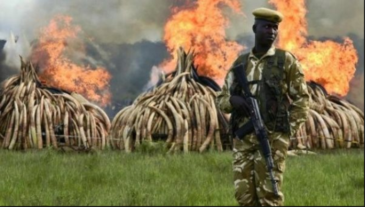
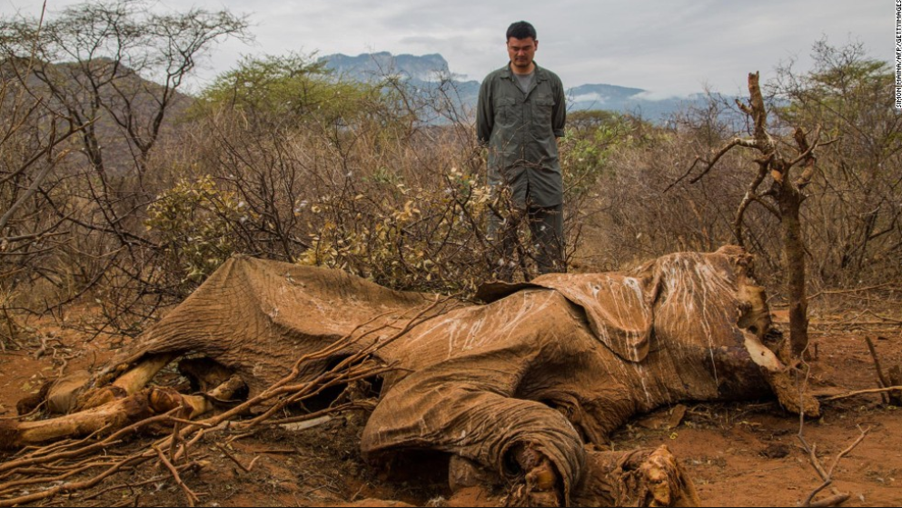
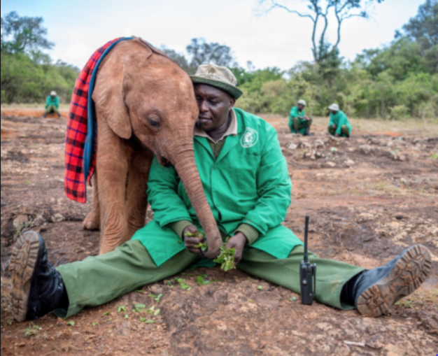

KenyaKoin is my own personal idea of a crypto currency, that I hope to
one day bring to fruition. This coin or token would revolve around the necessity
of our human race to embrace conservation and wildlife protection.
My idea would be similar along the lines of Decent.Bet's where investors
would be rewarded. I would propose different tiers of rewards and lotterys.
The highest lottery of which would include and expenses paid trip to a safari in Africa
or whatever conservation the winner may choose.
I would hope for this coin to bring some economic stability to regions where
poaching and trapping are the only economy, so as to hault the looming threat of extinction
of thousands of species including our own.

This is why we truly need conservation and donations to help endangered species
and right the wrongs that have been committed in these places around the world.

Just another example of the attrocities that go on daily across the globe

It goes to show that in many places the greed that takes these animals lives can be
fought with dedication and hard work but eventually will need massive capital to
truly combat the evils that still exist.